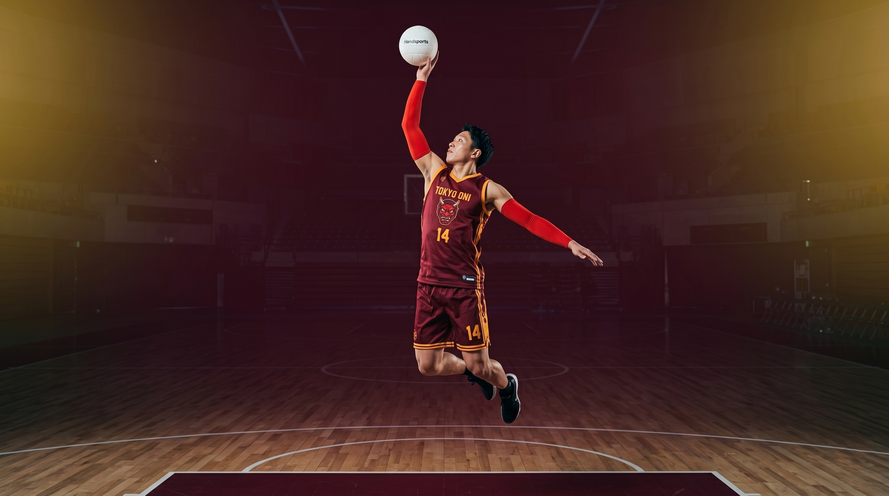

TOKYO ONI東京鬼 · EST. 1976
鬼

FISB T1 · СЕЗОН 2026 · ТИЖДЕНЬ 13 · 50 РОКІВ ОНІ
WE ARE
ONI.
一つ鬼、勝つ
Із серпня 1976 року — п'ятдесят сезонів, три корони T1, п'ять JSPA, шістнадцять трофеїв. Сьогодні — друге місце FISB T1 і LA Photons на Tokyo Arena 27 квітня. Демон живий.
50Років
16Трофеїв
8–4Сезон 26
#2FISB T1
ОСТАННІЙ РЕЗУЛЬТАТ · ТИЖД 12 · 20.04.2026 · SHANGHAI OPEN-AIR
TOKYO ONI 82
—
76 SHANGHAI ROYALS
OT · виїзд · W
SAITO 31 PTS · NAKASHIMA 11 AST · INOUE 6 BLK → ЗВІТ МАТЧУ
EST. 14.08.1976 · IKEBUKURO
П'ЯТДЕСЯТ
П'ЯТДЕСЯТ
РОКІВ ОНІ.
Клуб заснував Шіґеру Омія — тренер баскетболу Університету Васеда, який зібрав сім гравців у гімназії Нерима влітку 1976-го, через чотири роки після легалізації Spectrum-Ball у Японії.
ІСТОРІЯ КЛУБУ ›1976Заснування · 東京赤鬼 Tokyo Akaoni
1982Перше чемпіонство JSPA
1983Відкриття Tokyo Arena · Коракуен
1988Перший Asian Pigment Cup
1998Ребрендинг · Tokyo Oni
2009Вступ у FISB T1 Asia-Pacific
2014Перша корона T1 · Ісіхара MVP
2018Реконструкція арени · LED-ring PMS
2024Третя корона T1 · back-to-back
2026Сезон 50 · 鬼、鬼、鬼
01 / СТАРТОВИЙ СКЛАД 2026
ПОВНИЙ СКЛАД →
ШІСТЬ ВІДТІНКІВ 六つの鬼


СПЕКТР ОНІ · 我らの色
Наш склад.
Наш спектр.
Стартова сімка сезону 2026 — середній вік 26 років, середній стаж у клубі 6.3 сезони. Троє виховані в академії 鬼の巣 у Ікебукуро. Найстарший — капітан Накашіма (одинадцятий сезон), наймолодший на лавці — Куросава (вісімнадцять, драфт цього року). Клацніть на будь-який сегмент, щоб відкрити профіль гравця.
ПОВНИЙ СКЛАД →02 / ТРОФЕЙНА ЗАЛА · 栄光
ВСІ НАГОРОДИ →
ШІСТНАДЦЯТЬ ТРОФЕЇВ 十六
FISB T1
3×
2014 · 2019 · 2024
Чемпіонат Азійсько-Тихоокеанського дивізіону
JSPA PREMIER
5×
1982 · 1985 · 1991 · 1994 · 2001
Японська профліга Spectrum-Ball, до злиття 2008
EMPEROR'S CUP
5×
1986 · 1992 · 2002 · 2015 · 2022
Кубок Імператора · національний трофей
ASIAN PIGMENT CUP
3×
1988 · 1997 · 2003
Клубний турнір Азії до заснування FISB
03 / ОСТАННЄ · 最新
УСІ СТАТТІ →